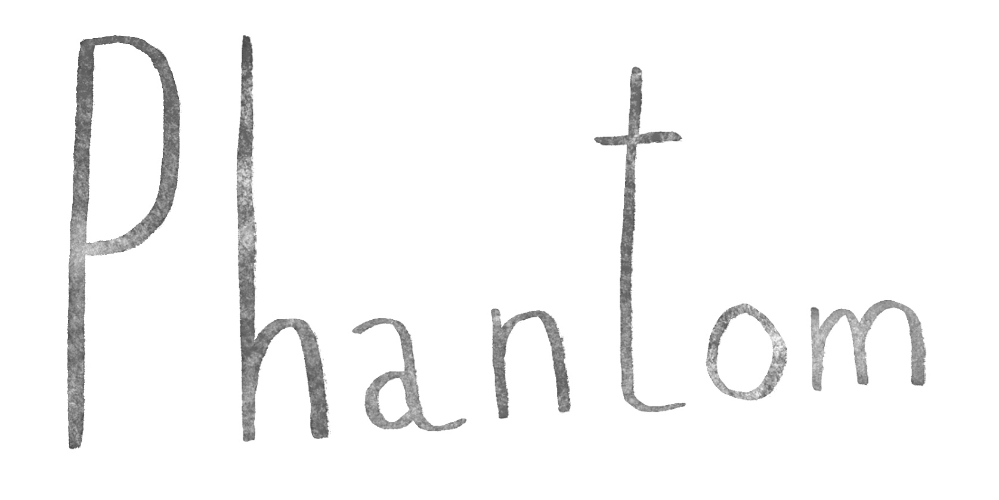

Phantom ist ein Musiktheaterabend über die Stimme im Zeitalter ihrer digitalen Manipulierbarkeit. Fast alle Gesangs- und Sprechstimmen sind KI-generiert; nur ein Kinderchor ist echt. Die Inszenierung verbindet Labor, Liederabend und Drag-Show, zeigt Live-Generierung aus Publikumsstimmen und fragt nach Identität, wenn wir der Stimme nicht mehr trauen.
Die Produktion wurde mit dem Stipendium „Junge Kunst / Neue Medien“ der Stadt München ausgezeichnet.
06.02.2027 | 20:00
HochX | München
weitere Aufführung am 07.02.2027 | 18 Uhr